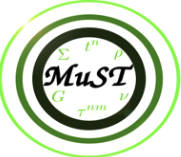

Welcome to the MuST documentation!
{kind=link}

MuST is a research project supported by National Science Fundation to build a public ab initio electronic structure calculation software package, with petascale and beyond computing capability, for the first principles study of quantum phenomena in disordered materials. The MuST package is now (as of January 1st, Year 2020) free to download on GitHub (https://github.com/mstsuite) under a BSD 3-clause license.
MuST is developed based on full-potential multiple scattering theory, also known as Korringa-Kohn-Rostoker method, with Green function approach. It is built upon decades of development of research codes led by Malcolm Stocks, and his postdocs and students, in the Theory Group of Metals and Ceramics Division, which later became Materials Science and Technology Division, in Oak Ridge National Laboratory. The original research codes include Korringa-Kohn-Rostoker Coherent Potential Approximation (KKR-CPA), a highly efficient ab initio method for the study of random alloys, and Locally Self-consistent Multiple Scattering (LSMS) method, a linear scaling ab initio code capable of treating extremely large disordered systems from the first principles using the largest parallel supercomputers available. It is originally suggested by Mark Jarrell, and also shown by model calculations, that strong disorder and localization effects can also be studied within the LSMS formalism with cluster embedding in an effective medium with the Typical Medium Dynamical Cluster Approximation (TMDCA), which enables a scalable approach for first principles studies of quantum materials.
The ultimate goal of MuST project is to provide a computational framework for the investigation of quantum phase transitions and electron localization in the presence of disorder in real materials, and enable the computational study of local chemical correlation effects on the magnetic structure, phase stability, and mechanical properties of solid state materials with complex structures.
Ther starting point of the MuST package is the integration of two research codes: LSMS (formerly LSMS3) and MST (formerly MST2), both are originally based on the legacy LSMS-1 code developed in the mid of 1990s in Oak Ridge National Laboratory.
The LSMS code, maintained by Markus Eisenbach, is mainly written in C++. It consists of muffin-tin LSMS with an interface for Monte-Carlo simulation driver. The LSMS code is one of the baseline benchmark codes for DoE COREL systems and has also been selected as one of the CAAR projects for exascale computing on Frontier system. The LSMS code demonstrates nearly ideal linear scaling with 96% parallel scaling efficiency across the Titan machine at ORNL.
The MST code, maintained by Yang Wang, is mainly written in FORTRAN 90. It focuses on physics capabilities, and in the mean time serves as a platform for implementing and testing full- potential multiple scattering theory and its numerical algorithms. It consists of LSMS, KKR, and KKR-CPA codes and is capable of performing 1) muffin-tin and full-potential; 2) non-relativistic, scalar-relativistic, and fully-relativistic; and 3) non-spin-polarized, spin-polarized, and spin-canted ab initio electronic structure calculations.
The KUBO code, maintained by Vishnu Raghuraman, is mainly written in FORTRAN 90. It implements the Kubo-Greenwood formula in the framework of KKR-CPA method and calculates the electrical conductivity of random alloys.
The MuST project is a team effort, requiring to involve dedicated researchers from condensed matter physics, high performance computing, computational materials science, applied mathematics and software engineering communities. The current participants of the MuST project include: * Chioncel, Liviu (Institute of Physics, Augsburg University, Germany) * Eisenbach, Markus (Center for Computational Sciences, Oak Ridge National Laboratory, USA) * Raghuraman, Vishnu (Department of Physics, Carnegie Mellon University) * Tam, Ka-ming (Department of Physics, Louisianna State University, USA) * Terletska, Hanna (Department of Physics, Middle Tennessee State University, USA) * Wang, Yang (Pittsburgh Supercomputing Center, Carnegie Mellon University, USA) * Widom, Michael (Department of Physics, Carnegie Mellon University) * Zhang, Yi (Kavli Institute for Theoretical Sciences, Beijing 100190, China)
ACKNOWLEDGEMENT
The current research efforts in the development of MuST are supported in part by NSF Office of Advanced Cyberinfrastructure and the Division of Materials Research within the NSF Directorate of Mathematical and Physical Sciences under award number 1931367 (Terletska), 1931445 (Tam), 1931525 (Wang), 2103958 (Raghuraman and Widom).